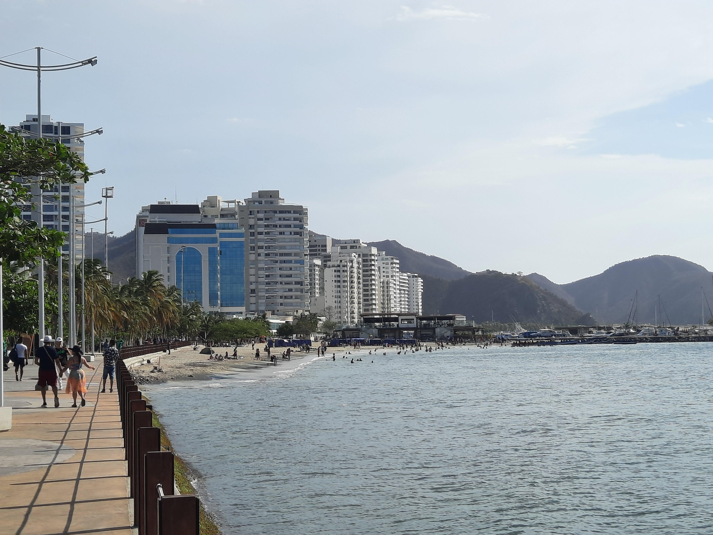

Go Back
Santa Marta

Santa Marta is a coastal city of about 500,000 people in Northern Colombia. It's mostly known to tourists for being the access point to Tayrona National Park. I spent 4 days in Santa Marta. This is my guide about things to do, what to eat and where to stay in the city. Note that I have a separate page that outlines visiting Tayrona National Park so I don't mention it on this page.
Malecón de Bastidas is the walkway along the coast in Barrio Centro. It has a boardwalk area and leads to a small beach with a backdrop of tall white apartment buildings. The malecon was a nice area to take a stroll down and people watch. There are usually lots of vendors and activities going on on the boardwalk. I noticed more activity in the evenings as the daytime can be extremely hot in Santa Marta.
Carrera 3 is probably the most touristy street in the city so it is packed with international restaurants and bars. There is also impressive street art on every block and parque de los novios at the intersection of carrera 3 and calle 19. They have food options ranging from street food to hot dogs to chinese food, tacos and shawarma. The bars are reasonably priced and you can enjoy a bit of nightlife here though people don't necessarily come to Santa Marta because of its nightlife. I did however see many party buses driving around the malecon area playing loud music! They looked like fun.
The Catedral Basílica de Santa Marta is an impressive cathedral in the center of Santa Marta. I didn't go inside of it but it's an impressive sight to see and there are always many activities happening the plaza around the basilica.
One feature of Santa Marta being on the coast is that it has more seafood than the inland cities. Alongside the Malecon walkway there are a bunch of restaurants that have seafood. There was a decent variety of different options however these restaurants were a bit more pricey than the ones further inland. Another dish I tried here was the salchipapas. I've seen salchipapas all over Colombia but I just happened to try them here. You can see the massive pile of fries, cheese, vegetables, corn, sausage, bacon and more. It was definitely enough for two people!
There are a few cafes I frequented in the city center. I'm sure there are plenty more cafes but the ones I went to were Juan Valdez and Tostao. They have these around Parque Bolivar. Tostao actually saved me one day when the wifi at my hotel stopped working. I was able to teach my online lesson inside the cafe. One thing as a working traveller that is important is having a back-up plan in case something like the wifi at your hotel stops working. Knowing a nearby place with wifi can help to avoid missing excessive amounts of work if something like this happens. It's a good thing to keep in mind.
Most tourists who come to Santa Marta stay in Barrio Centro (City Center). This is the area that has the places mentioned in my "Things to do" section. It also has most of the hotels and tourist infrastructure. There are lots of good restaurants in this area too which are mentioned above in my food section. A reasonably priced hotel option is the Hotel Miami just down the road from the Basilica. Hotel Miami has very fast wifi and a cool restaurant/ bar on the rooftop that we enjoyed. It was well decorated on the rooftop with bright paintings and lights (see the flamingo paintings). The rooms are nothing special but do have everything you need for a short stay and it is of course in a prime location near all the main activities.